교통기사 (2015-03-08 기출문제)
1과목: 교통계획
1. 통행분포(Trip distribution)단계에서 교통량 추정에 사용되는 디츠로이트방법, 프라타방법은 주로 어떤 경우에 사용되는가?
- 교통 패턴의 변화가 큰 경우
- 교통 패턴의 변화가 작은 경우
- 사회경제활동의 변화가 큰 경우
- 장래에 교통 여건의 변화가 큰 경우
(정답률: 76%)

2. 도시 지역 전체를 대상으로 하는 통행실태 조사 시 교통지구(traffic zone)의 설정에 관한 설명으로 옳은 것은?
- 교통지구내의 균질성을 유지하기 위해 내부의 사회 경제적 요인의 특성을 균일하게 유지하고 형태는 가능한 한 공간적으로 길게 늘어져 있어야 한다.
- 지구의 구분은 가능하면 통행의 발생, 교통류의 흐름에 따라 구분하고 강, 산 등의 자연 경계물을 활용하되 인위적인 행정구역 단위는 고려하지 않는다.
- 일반적으로 도심 지역의 교통지구 크기는 작고, 인구밀도가 낮은 외곽 지역은 큰 교통지구를 갖는다.
- 조사지역에 대한 교통지구의 수는 교통지구의 크기에 상관없이 인접한 조사지역과 교통지구의 수가 동일하다.
(정답률: 75%)
3. 다음 중 노트(node)를 설명한 것 중 틀린 것은?
- 도로구간에서 도로특성이 변화하는 지점을 나타낸다.
- 회전제약을 할 수 있다.
- 용량을 표현할 수 있다.
- 존의 센트로이드(zone centroid)를 표현할 수 있다.
(정답률: 77%)
4. 지능형 교통체계의 서비스 분야에서 교통수요분석이 가장 많이 활용되는 분야는?
- 첨단교통관리체계(Advanced Traffic Management Systems)
- 첨단교통정보체계(Advanced Traveler Information Systems)
- 첨단차량제어체계(Advanced Vehicle Control Systems)
- 사업용차량운영체계(Commercial Vehicle Operations)
(정답률: 65%)
5. 첨단교통체계(ITS)에서 목표로 하는 각종 사용자서비스를 통합적으로 구현하기 위하여 시스템의 기능적/비기능적 사항과 물리적 구성장치, 정보흐름 등을 정의하는 것은?
- ITS 아키텍쳐
- ITS 프레임
- ITS 표준
- ITS 서브시스템
(정답률: 85%)
6. 수단분담률이 교통수단의 특성에 따라 통행자가 선택하는 것이 아니라 산회ㆍ경제적 변수에 따라 선택 패턴이 결정된다는 전제에서 출발하여 대중교통서비스율이 낮고 혼잡이 적은 단기예측에 유리한 것은?
- 통행단모형
- UMODEL형
- UMTA모형
- 통행교차모형
(정답률: 70%)
7. 다음 중 사람통행실태조사방법으로 옳지 않은 것은?
- 스크린라인조사
- 폐쇄선조사
- 가구방문조사
- 주행조사
(정답률: 63%)
8. 경제성 분석에 사용되는 순현재 가치(NPV)분석법에 대한 설명으로 옳지 않은 것은?
- 교통사업의 경제성분석시 보편적으로 사용
- 편익을 비용으로 나눈 비율의 결과가 가장 큰 대안을 선택하는 방법
- 할인율을 적용하여 장래의 비용, 편익을 현재 가치화
- 대안 선택에 있어서 정확한 기준을 제시하고 다른 대안과 비교하기 용이
(정답률: 60%)
9. 다음 중 4단계 수요추정법의 특징으로 옳지 않은 것은?
- 각 단계별로 결과에 대한 검증을 거치므로 현실묘사가 가능하다.
- 통행 패턴의 변화가 급격하지 않은 경우 설명력이 뛰어나다.
- 계획가의 주관을 배제하고 객관적 추정이 가능하다.
- 단계별로 적절한 모형의 선택이 가능하다.
(정답률: 81%)
10. 어느 도심지역 첨두 한 시간당 주차요금이 3000원 일 때 주차수요는 10000대이다. 주차요금이 25% 인상될 때 수요의 감소량이 500대라면, 이 도시의 주차요금에 대한 수요탄력치는 얼마인가?
- -0.1
- -0.2
- -0.3
- -0.4
(정답률: 75%)
11. 과거추세 연장법으로 장래의 사회, 경제지표를 예측할 경우 사용되지 않는 방법은?
- 곰페르츠모형식
- 로지스틱모형식
- 대수곡선식
- 중력모형식
(정답률: 60%)
12. 다음 중 ITS(Intelligent Transportation Systems)의 목적 및 개발배경으로 옳지 않은 것은?
- 도로이용의 효율성을 제고하기 위하여
- 도로의 교통안전을 도모하기 위하여
- 저공해ㆍ무인운전차량 등 새로운 교통기술의 개발 및 보급을 위하여
- 통행 발생량과 도착량을 정확하게 예측하기 위하여
(정답률: 75%)
13. 택시요금의 변화에 따라 버스수요의 변화정도를 설명하는 개념은?
- 가격탄력성
- 교차탄력성
- 공급탄력성
- 소득탄력성
(정답률: 79%)
14. 보행자 서비스 수준에 대한 설명으로 옳은 것은?
- 서비스 수준 A는 보행교통류율(인/분/m)이 10 이하이고 보행속도를 자유롭게 선택가능한 상태
- 서비스 수준 C는 보행교통류율(인/분/m)이 42 이하이고 보행속도를 자유롭게 선택가능한 상태
- 서비스 수준 D는 보행교통류율(인/분/m)이 60 이하이고 보행속도를 자유롭게 선택가능한 상태
- 서비스 수준 E는 보행교통류율(인/분/m)이 106 이하이고 보행속도를 자유롭게 선택가능한 상태
(정답률: 60%)
15. 다음 중 일반 시내도로상에 버스 우선기법을 도입할 시 나타날 수 있는 효과와 가장 관계가 먼 것은?
- 시설 비용 감소
- 정시성 확보
- 신속성 증가
- 버스 운행비용 감소
(정답률: 67%)
16. 다음 중 교통수단선택을 예측하는데 사용되는 모형이 아닌 것은?
- 통행단모형
- 로짓모형
- 통행교차모형
- 간섭기회모형
(정답률: 68%)
17. 어느 노선의 용량이 시간당 7000대이고 자유통행시간이 1시간 30분이다. 통행량이 10000대일 경우 통행시간을 통행량-속도 함수식인 BPR식을 이용하여 계산한 값으로 옳은 것은?
- 약 1.57시간
- 약 2.14시간
- 약 2.44시간
- 약 3.25시간
(정답률: 35%)
18. 공공자원의 사회적 기회비용에 적절한 용어는?
- 잠재가격
- 인플레이션
- 소비자 잉여
- 할인율
(정답률: 71%)
19. 다음 중 모노레일(Monorail)이 지하철보다 유리한 점으로 옳지 않은 것은?
- 동일 수송능력을 기준으로 건설비가 싸다.
- 공사기간이 짧다.
- 승강장 길이에 제한이 없다.
- 전망 및 통풍이 좋다.
(정답률: 76%)
20. 다음 중 장ㆍ단기 교통계획에 대한 설명으로 옳은 것은?
- 단기교통계획은 자본집약적이고 장기교통계획은 저자본비용을 추구한다.
- 단기교통계획은 소수의 대안을 추구하고 장기교통계획은 다수의 대안을 추구한다.
- 단기교통계획은 서비스지향적이고 장기교통계획은 시설지향적이다.
- 단기교통계획은 교통수요가 비교적 고정된 경우, 장기교통계획은 교통수요가 변화 가능한 경우에 적용한다.
(정답률: 84%)
2과목: 교통공학
21. 다음은 녹색시간 동안에 방출되는 용량이 한 주기 동안의 도착량보다 많은 경우, 신호 교차로에서의 대기행렬모형이다. 정지하는 차량의 비율(Ps)을 옳게 나타낸 것은? (단, r : 유효적색시간(초), g : 유효녹색시간(초), q : 한 접근로의 평균 도착교통류율(pcu/초), to : 녹색신호의 시작에서부터 대기행렬이 완전히 소멸되는 시간(초))
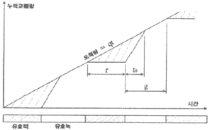
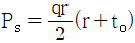
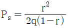
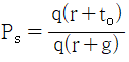
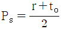
(정답률: 71%)
22. 구간별 교통류의 상태가 아래와 같을 때, 그 경계면 AA에서 후방 충격파의 속도는?
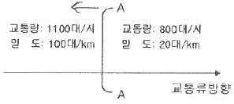
- 3.75 km/시
- 4.00 km/시
- 5.43 km/시
- 7.25 km/시
(정답률: 68%)
23. 정주기식(Pre-timed control) 신호로 운영되는 신호교차로의 교통조건이 다음과 같을 때, 해당 이동류의 포화도(V/C)는 얼마인가?
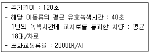
- 0.81
- 0.63
- 0.49
- 0.27
(정답률: 47%)
24. 신호교차로에서 교통량이 800대/시인 좌회전 이동류의 중차량 구성비가 15%이고 중차량 승용차환산계수가 1.8일 때 보정교통량은 약 얼마인가?
- 687 pcph
- 896 pcph
- 920 pcph
- 1016 pcph
(정답률: 74%)
25. 교통류의 특성에 대한 다음 설명 중 옳은 것은? (단, 교통류는 Greenshield 모형을 따른다고 가정한다.)
- 임의의 교통류율에 대응하는 밀도는 하나만 존재한다.
- 임의의 교통류율에 대응하는 속도는 하나만 존재한다.
- 임의의 속도에 대응하는 밀도는 하나만 존재한다.
- 밀도가 높으면 교통류율은 커진다.
(정답률: 58%)
26. 현장 관측자료를 이용한 속도와 밀도의 관계가 아래와 같을 때, 다음 설명 중 옳지 않은 것은?
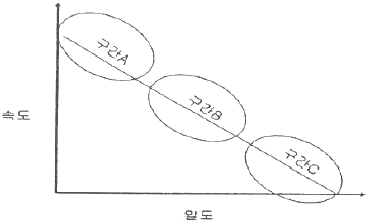
- 구간 A는 차량의 움직임이 상당히 자유로운 영역이다.
- 구간 B는 차량이 증가하면서 속도가 줄어든 영역이다.
- 구간 C는 Jam Density가 관측되는 구간이다.
- 용량은 구간 C에서 주로 관측된다.
(정답률: 73%)
27. 어떤 신호 교차로의 각 현시에 대한 V/C값이 아래 표와 같을 때, 지체를 최소로 하는 최적주기는? (단, 총 손실시간은 12초이며 Webster방법에 의한다.)
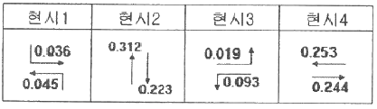
- 65초
- 78초
- 95초
- 102초
(정답률: 54%)
28. 임의도착 교통량이 시간당 600대이다. 30초 동안 4대가 도착할 확률은? (단, 도착분포는 포아송분포로 가정한다.)
- 0.125
- 0.141
- 0.163
- 0.175
(정답률: 54%)
29. 고속도로 기본구간의 이상적인 조건(ideal condition)기준으로 옳지 않은 것은?
- 승용차로만 구성된 교통류
- 측방여유폭 1.5m 이상
- 차로폭 3m 이상
- 평지
(정답률: 80%)
30. 신호교차로에 관한 용어의 설명으로 옳지 않은 것은?
- 임계차로군(critical lane group) : 주어진 신호 현시동안 가장 큰 포화도(V/C비)를 갖는 차로군
- 제어지체(control delay) : 신호제어로 인해 차로군이 속도를 줄이거나 정지함에 따른 지체
- 진행연장시간(end lag) : 황색신호가 켜지면 교차로 안이나 가까이에서 진행하던 차량은 정지선에 급정거 할 수 없으므로 황색신호의 일부분을 녹색신호처럼 불가피하게 이용하는 시간
- 양방 보호좌회전 신호(dual left turn protected) : 서로 마주 보는 접근로의 좌회전이 동일 현시에 진행하는 신호
(정답률: 73%)
31. 운전자가 실제로 느끼는 속도이며 속도규제 및 단속, 신호기설치위치 선정, 신호시간 계산, 사고분석 등에 이용되는 속도는?
- 주행속도
- 자유속도
- 설계속도
- 지점속도
(정답률: 65%)
32. 속도와 교통량에 대한 설명으로 옳지 않은 것은?
- 도로의 일정 구간을 주행하는 차량들의 평균속도를 구간거리를 고려하여 산출하는 것을 공간평균속도라고 한다.
- 교통의 흐름이 전혀 변하지 않는 경우를 제외하고 공간 평균속도는 항상 시간평균속도보다 높은 값을 나타낸다.
- 교통량은 단위시간당 도로의 한 지점 또는 한 구간을 통과한 차량대수로 나타낼 수 있다.
- 한 교통류 내에서 속도의 분산이 큰 경우에는, 교통류 내 각 차량들의 속도의 변화가 크다는 것을 의미한다.
(정답률: 80%)
33. 교통류 특성의 확률분포에 대한 설명으로 옳지 않은 것은?
- 교통공학에서 사용되는 확률분포는 일반적으로 계수분포(counting distribution)와 간격분포(hap distribution)로 대별된다.
- 계수분포 중 교통공학에서 많이 이용되는 것은 포아송분포, 이항분포, 음이항분포, 기하분포, 다항분포, 초기하분포 등이 있다.
- 간격분포는 연속형 변수로 나타내며 대표적으로 음지수분포, 편의된 음지수분포, 얼랑(Erlang)분포가 있다.
- 이항분포는 n(시행횟수)값과 p(확률)값이 매우 큰 어떤 값을 가질 때 np를 평균으로 하는 포아송분포로 근사화시킬 수 있다.
(정답률: 58%)
34. 임계밀도(Critical density)상태 때의 교통량은?
- 0이다
- 최대 교통용량이다.
- 최대 교통용량의 1/2이다.
- 알 수 없다.
(정답률: 75%)
35. 차량운전시 외부 자극에 대한 운전자의 신체적 반응과정인 PIEV 과정의 요소가 아닌 것은?
- 지각(perception)
- 경험(experience)
- 식별(intellection)
- 반응(volition)
(정답률: 76%)
36. 어느 도로의 개선사업을 시행하기 전ㆍ후의 현장관측자효가 아래와 같을 때, 속도 효과 여부를 검정한 결과가 옳은 것은? (단, α=0.⑤)
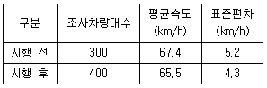
- 속도감소 효과가 있다.
- 속도증가 효과가 있다.
- 속도감소 효과를 판단할 수 없다.
- 속도감소 효과가 없다.
(정답률: 72%)
37. 완전 감응 신호기(full-actuated signal)의 기본적인 운영방식에 대한 설명으로 옳지 않은 것은?
- 모든 접근로에 검지기를 설치한다.
- 어느 도로에도 콜(call)이 없으면 현재의 현시가 그대로 지속된다.
- 일반적으로 부도로 교통량이 주도로 교통량의 20% 보다 적을 때 사용한다.
- 각 현시 끝에는 정해진 황색신호가 따른다.
(정답률: 56%)
38. 교차로의 차량당 평균지체도를 산정하기 위하여 10초 간격으로 교차로 접근로에 정지한 자량을 조사한 결과 5분 동안 통과한 170대 중 136대의 차량이 정지하였을 때, 접근차량당 평균지체도는?
- 6초
- 8초
- 12초
- 30초
(정답률: 50%)
39. 노면의 마찰계수에 관한 설명으로 옳지 않은 것은?
- 노면이 습윤할 때보다 건조할 때의 마찰계수가 크다.
- 마모된 타이어보다 양호한 타이어의 마찰계수가 크다.
- 차량의 규모와 중량분포에 따른 마찰계수의 변화는 없다.
- 속도가 같은 경우 노면상태에 따른 마찰계수는 같다.
(정답률: 59%)
40. 다음 중 교통신호 운영의 장점으로 가장 거리가 먼 것은?
- 질서 있는 교통류의 이동이 가능하다.
- 교통신호의 적절한 배치와 관리를 통해 교차로의 용량을 증대시킬 수 있다.
- 교통사고 유형 중 추돌사고가 감소된다.
- 인접교차로를 연동시켜 일정한 속도로 긴 구간을 연속 진핼시킬 수 있다.
(정답률: 66%)
3과목: 교통시설
41. 평면교차로 설계의 기본 원칙에 대한 설명으로 옳지 않은 것은?
- 교차각은 되도록 직각에 가깝게 한다.
- 네 갈래 이상의 여러 갈래 교차로를 설치하여서는 안된다.
- 엇갈림 교차, 굴절 교차 등의 변형교차는 피해야 한다.
- 교차로의 기하구조와 교통관제방법이 조화를 이루도록 한다.
(정답률: 74%)
42. 평면교차로에서의 도류화설계를 위한 기본원칙으로 옳지 않은 것은?
- 곡선부는 적절한 곡선반지름과 폭을 가져야 한다.
- 운전자가 한 번에 한 가지 이상의 의사결정을 하지 않도록 해야 한다.
- 교통제어시설은 교통섬과 분리하여 설계하여야 한다.
- 속도와 경로를 점진적으로 변화시킬 수 있도록 접근로의 단부를 처리해야 한다.
(정답률: 74%)
43. 회전교차로 설치를 위한 여건을 고려할 때 설치가 부적절한 조건이 아닌 것은?
- 총 진입 교통량이 하루 4만대를 초과하는 경우
- 시야확보가 어려운 경우
- 오전, 오후 첨두현상이 심한 경우
- 긴급자동차의 우선통과가 보장되어야 할 경우
(정답률: 41%)
44. 아래 그림과 같이 +3%의 경사와 -3% 경사인 두 지점 사이에 500m 길이의 종단곡선을 설치한 경우, 종단경사 변화량에 대한 종단곡선 길이의 비는?
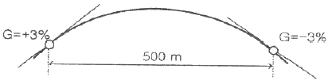
- 97.2m/%
- 83.3m/%
- 62.7m/%
- 50.4m/%
(정답률: 64%)
45. 앞지르기시거를 계산하기 위한 가정으로 옳지 않은 것은?
- 앞지르기 당하는 자동차는 일정한 속도로 주행한다.
- 앞지르기하는 자동차는 앞지르기를 하기 전까지 앞지르기 당하는 자동차보다 빠른 속도로 주행한다.
- 앞지르기가 가능하다는 것을 인지한다.
- 마주 오는 자동차가 설계속도로 주행하는 것으로 하고 앞지르기가 완료되었을 때, 대향자동차와 앞지르기한 자동차 사이에는 적절한 여유거리가 있으며 서로 엇갈려 지나간다.
(정답률: 56%)
46. 계획연면적이 6000m2인 신축 근린생활시설의 첨두시 주차발생량이 1000m2당 6.3대 일 때, 이 근린생활시설의 주차수요는? (단, 주차효율은 80.5%이다.)
- 53대
- 47대
- 38대
- 31대
(정답률: 50%)
47. 신호등의 설치에 대한 설명으로 잘못된 것은?
- 진행방향의 교통상황과 신호지시를 동시에 볼 수 있도록 고려한다.
- 신호등면은 진행방향으로부터 좌우 각각 40˚ 범위 내에 위치해야 한다.
- 현장 여건을 고려하여 교차로 건너편에 신호등을 추가로 설치할 수 있다.
- 신호등면의 설치높이는 측주식의 횡형, 현수식, 문형식 등은 신호등면의 하단이 차도의 노면으로부터 수직으로 4.5m 이상의 높이에 위치하는 것이 원칙이다.
(정답률: 71%)
48. 다음 중 차량 1대당 주차 소요면적이 가장 큰 각도주차형식은? (단, 소형차를 기준으로 함)
- 30˚ 전진주차
- 45˚ 전진주차
- 60˚ 전진주차
- 90˚ 전진주차
(정답률: 80%)
49. 고속도로에서 교통처리 및 교통운영에 필요한 인터체인지의 최소간격은?
- 2km
- 3km
- 5km
- 10km
(정답률: 42%)
50. 다음 중 우리나라 경찰청에서 분류한 교통안전표지의 종류가 아닌 것은?
- 규제표지
- 지시표지
- 정보표지
- 주의표지
(정답률: 82%)
51. 비상주차대에 대한 설명으로 옳지 않은 것은?
- 비상주차대의 폭은 3.0m로 하고 측대가 있는 경우에는 측대를 포함한 폭으로 하며, 소형자동차도로인 경우에는 2.5m로 축소할 수 있다.
- 고속도로에서의 비상주차대의 설치간격은 750m를 표준으로 한다.
- 비상주차대의 설치간격 결정 시에는 고장차가 그대로의 상태로 주행할 수 있을 것인가 또는 이력으로 밀어 대피시킬 것인가를 감안하여 가능한 거리를 판단해야 한다.
- 도시고속도로, 주간선도로로서 우측 길어깨의 폭원이 3.0m 미만일 경우에는 계획교통량이 적은 경우를 제외하고 비상주차대를 설치해야 한다.
(정답률: 58%)
52. 어느 건물의 주차용량이 50대, 주차이용 대수가 330대, 주차효율은 0.92, 주차장이 하루 18시간 개방된다고 할 때, 평균주차시간은?
- 3.5시간
- 3.2시간
- 2.8시간
- 2.5시간
(정답률: 42%)
53. 도로의 직선부와 원곡선부 사이에 완화곡선으로 클로소이드(Clothoid)곡선을 사용하는 경우, 클로소이드 파라메타(A)는 안전을 고려하여 일정한 값 사이로 설계해야 하는데, 만약 원곡선반경이 400m인 원곡선부와 접속되는 클로소이드 파라메타의 최대값은?
- 133m
- 200m
- 400m
- 600m
(정답률: 57%)
54. 도로의 선형에 대한 설명으로 옳지 않은 것은?
- 자동차 주행 시 안전하고 쾌적성을 유지하도록 설계한다.
- 선형 설계시 최대한 지형에 맞추어 하고 설계속도는 고려하지 않아도 된다.
- 자연적, 사회적 조건에 적합하고 경제적 타당성을 갖도록 설계한다.
- 운전자의 시각이나 심리적인 면에서 양호하게 설계한다.
(정답률: 84%)
55. 공동구의 설치에 관한 설명으로 옳지 않은 것은?
- 노상의 점용물건이 지하에 수용되어 도로교통 및 도시미관에 유리하다.
- 반복된 노면굴착 및 복구에 따른 경제적 손해와 노면의 지지력에 손상을 입힌다.
- 각종 지하매설물이 정비되고 합리적인 이용을 기대할 수 있으며, 따라서 점용단면에 대한 수용용량이 증대된다.
- 대풍, 화재, 지진 등 각종 재난 상활 발생시 매설된 기반시설의 피해를 최소화하고 효과적인 관리가 가능하다.
(정답률: 72%)
56. 다음 중 교통섬의 설치 효과로 옳지 않은 것은?
- 도류로를 명시하여 교통의 흐름을 정비한다.
- 보행자를 위한 안전섬의 역할을 할 수 있다.
- 교차로 관련 부대 시설의 설치 장소를 제공한다.
- 차량 정지선의 위치를 후진시킬 수 있다.
(정답률: 73%)
57. 설계속도를 설명한 것으로 옳지 않은 것은?
- 자유속도에서 교통류 내의 내부마찰과 도로변 마찰로 인한 지체를 감안한 속도이다.
- 차량의 주행에 영향을 미치는 도로의 물리적 형상을 상호 관련시키기 위해 선택된 속도이다.
- 운전자들이 쾌적성을 잃지 않고 유지할 수 있는 속도이다.
- 도로의 기하구조를 결정하는데 기본이 된다.
(정답률: 53%)
58. 다른 도로와의 연결에 의한 변속차로 설치에 대한 설명으로 잘못된 것은?
- 변속차로는 2.75m 이상의 폭으로 설치한다.
- 차량의 진입과 진출을 원활하게 유도할 수 있도록 노면표시를 하여야 한다.
- 성토 또는 절토부의 비탈면 경사는 접속되는 도로와 동일하거나 완만하게 설치한다.
- 테이퍼와 사업부지에 접하는 변소차로의 접속부는 최소곡선반경 15m 이상의 곡선반경으로 설치한다.
(정답률: 57%)
59. 과속방지시설에 대한 설명으로 옳지 않은 것은?
- 저속 주행을 유도하기 위한 교통정온화 기법에 해당한다.
- 속도를 30km/h 이하로 제한할 필요가 있는 도로에 설치한다.
- 높은 노면마찰계수로 인해 노면 포장과 다른 재료로 설치한다.
- 과속방지턱은 필요하다고 판단되는 장소에 최소로 설치한다.
(정답률: 70%)
60. 다음 중 시거에 의한 종단곡선의 최소길이를 산정할 때 오목곡선의 경우, 시거(S)가 종단곡선의 길이(L)보다 짧을 때의 산정 공식으로 옳은 것은? (단, A: 종단경사의 변화량(%)임)
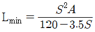
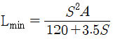
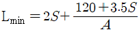
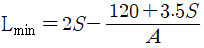
(정답률: 62%)
4과목: 도시계획개론
61. 1920년대부터 1940년대에 걸쳐 미국의 버제스, 호이트, 해리스 등에 의하여 주창된 도시의 공간 내부구조이론이 아닌 것은?
- 동심원이론
- 선형이론
- 원형이론
- 다핵심이론
(정답률: 49%)
62. 다음 중 케빈 린치(Kevin Lynch)가 제시한 도시의 이미지(The Image of the City)를 구성하는 5가지 요소에 해당하지 않는 것은?
- 도로(path)
- 기념적 건물(landmark)
- 공간(space)
- 지구(district)
(정답률: 55%)
63. 다음 중 앙케리트를 반복 실시하여 여러 차례 의견을 수렴시켜 그 결과를 종합하여 미래의 예측에 접근하는 도시조사 방법은?
- 적응계획(Adaptive planning)
- 델파이법(Delphi method)
- 잠재력 분석(SWOT Analysis)
- 배분적계획(Allocative planning)
(정답률: 64%)
64. 도시ㆍ군관리계획의 입안에 관하여 주민의 의견을 청취하고자 하는 때에는 도시ㆍ군관리계획안을 최소 며칠 이상 일반이 열람할 수 있도록 하여야 하는가?
- 7일
- 14일
- 20일
- 30일
(정답률: 66%)
65. 다음의 설명에 공통으로 해당하는 용어는?
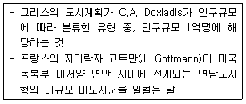
- 에큐메노폴리스
- 메트로폴리스
- 메갈로폴리스
- 다이애나폴리스
(정답률: 52%)
66. 다음 중 도시ㆍ군관리계획에 포함되지 않는 것은?
- 용도지역ㆍ용도지구의 지정 또는 변경에 관한 계획
- 지구단위계획의 지정 또는 변경에 관한 계획
- 도시개발사업이나 정비사업에 관한 계획
- 주택개발 및 촉진에 관한 계획
(정답률: 65%)
67. 다음 중 도시를 구성하는 유기적 요소가 모두 옳은 것은?
- 시민, 활동, 토지 및 시설
- 주택, 밀도, 인구 및 동선
- 활동, 공간, 토지이용 및 교통
- 인구, 토지이용, 교통
(정답률: 56%)
68. 국토의 계획 및 이용에 관한 법률에서 규정하는 개발행위에 해당하지 않는 것은?
- 건축물의 건축 또는 공작물의 설치
- 경작을 위한 토지의 형질변경
- 토석의 채취
- 녹지지역ㆍ관리지역 또는 자연환경보전지역에 물건을 1개월 이상 쌓아놓는 행위
(정답률: 53%)
69. 다음 중 고대 그리스 도시의 특징으로 옳지 않은 것은?
- 도시의 중간지점에 아고라를 배치하였다.
- 히포디무스에 의해 격자형 가로망체계가 신도시 건설에 적용되었다.
- 많은 시민이 평등한 입장에서 만든 시민의 도시였다.
- 포럼을 중심으로 사원, 극장, 공중목욕탕을 배치하였다.
(정답률: 62%)
70. 주제공원의 종류와 내용으로 옳지 않은 것은?
- 역사공원-도시의 역사적 장소나 시설물, 유적ㆍ유물 등을 활용하여 설치하는 공원
- 수변공원-수변공간을 활용하여 도시민의 여가ㆍ휴식을 목적으로 설치하는 공원
- 문화공원-근린거주자의 보건ㆍ휴양 및 정서생활의 향상에 기여함을 목적으로 설치된 공원
- 체육공원-체육활동을 통하여 건전한 신체와 정신을 배양함을 목적을 설치하는 공원
(정답률: 76%)
71. 도시개발구역의 지정대상지역과 규모의 기준이 옳은 것은?
- 주거지역 - 2만m2 이상
- 상업지역 - 3만m2 이상
- 공업지역 - 3만m2 이상
- 도시지역 외 지역 - 10만m2 이상
(정답률: 56%)
72. 다음 Hoyt의 선형이론에서 “4”에 해당하는 토지이용은?
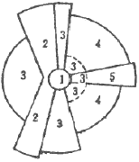
- 중심지역
- 도매 및 경공업지역
- 중산층 주거지역
- 저소득층 주거지역
(정답률: 69%)
73. 장래의 도시인구를 예측하는데 있어서 과거추세에 의한 예측방법이 아닌 것은?
- 등차급수법
- 최소자승법
- 집단생장법
- 지수하수법
(정답률: 56%)
74. 토지이용계획의 지역별 건축물의 형태 및 규모 규제에 해당되지 않는 것은?
- 건폐율
- 공개공지
- 용적률
- 대지의 분할 제한
(정답률: 64%)
75. 도시지역과 그 주변지역의 무질서한 시가화를 방지하고, 계획적, 단계적인 개발을 도모하기 위하여 일정기간 시가화를 유보하고자 지정하는 구역은?
- 시가화유보구역
- 시가화정비구역
- 시가화조정구역
- 시가화유도구역
(정답률: 46%)
76. 다음 중 상업지역의 종류가 아닌 것은?
- 준상업지역
- 중심상업지역
- 유동상업지역
- 근린상업지역
(정답률: 50%)
77. 주택단지의 토지이용비율을 주택용지 70%, 교통용지 15%, 그리고 공원 녹지 등 기타용지 15%로 계획하였다. 이 주택 단지의 총인구밀도를 175인/ha로 계획한다면 주택용지에 대한 순인구 밀도는?
- 140인/ha
- 175인/ha
- 200인/ha
- 250인/ha
(정답률: 47%)
78. 단독주택 및 다세대주택 등이 밀집한 지역에서 정비기반시설과 공동이용시설의 확충을 통하여 주거환경을 보전ㆍ정비ㆍ개량하기 위하여 시행하는 사업은?
- 주거환경개선사업
- 주거환경전비사업
- 주거환경관리사업
- 도시환경정비사업
(정답률: 39%)
79. 도시의 시설과 토지의 물리적 계획의 3대 요소 중 도시의 내ㆍ외부 간, 도시 내 각 지역 간 또는 도시 중요시설 상호간의 인구와 물자유통의 체계를 뜻하는 것은?
- 배치
- 밀도
- 분산
- 동선
(정답률: 65%)
80. 도시ㆍ군계획시설의 결정ㆍ구조 및 설치기준에 관한 규칙에 따른 용도지역별 도로율이 옳지 않은 것은?
- 주거지역 : 20퍼센트 이상 30퍼센트 미만
- 상업지역 : 25퍼센트 이상 35퍼센트 미만
- 공업지역 : 10퍼센트 이상 20퍼센트 미만
- 녹지지역 : 5퍼센트 이상 10퍼센트 미만
(정답률: 50%)
5과목: 교통관계법규
81. 부설주차장 설치의무가 면제되는 주차대수는?
- 400대 이하
- 300대 이하
- 200대 이하
- 100대 이하
(정답률: 53%)
82. 교통 분야별 지능형교통체계의 계획은 몇 년의 범위에서 수립하여야 하는가?
- 10년
- 7년
- 5년
- 3년
(정답률: 48%)
83. 국가통합교통체계효율화법에서 규정하는 타당성평가에 관한 설명으로 옳지 않은 것은?
- 사업시행자는 사업의 시작 전에 투자평가지침에 따라 사업의 타당성을 평가하여야 한다.
- 국토교통부장관은 대통령령으로 정하는 바에 따라 투자평가지침을 작성하여 고시하여야 한다.
- 사업 시행자는 타당성 평가 실시 결과와 예비타당성 조사 실시 결과 간 현저한 차이가 발생한 경우에는 국토교통부장관과 협의를 거쳐 관계 행정기관의 장에게 필요한 조치를 할 것을 요청 할 수 있다.
- 공공교통시설 개발사업과 민간투자사업 모두 타당성 평가서를 국토교통부장관에게 제출하여야 한다.
(정답률: 62%)
84. 도로교통법상 횡단보도가 있는 도로 중 횡단보도 주의표지를 설치해야 하는 경우가 아닌 것은?
- 포장도로의 교차로에 신호기가 있을 때
- 포장도로의 단일로에 신호기가 없을 때
- 비포장도로의 교차로에 신호기가 있을 때
- 비포장도로의 단일로에 신호기가 없을 때
(정답률: 63%)
85. 다음 중 시ㆍ군ㆍ구 교통안전정책심의위원회에 관한 설명으로 옳지 않은 것은?
- 위원장은 시ㆍ도지사가 된다.
- 구성 및 운영 등에 관하여 필요한 사항은 대통령령으로 정하는 바에 따라 당해 지방자치단체의 조례로 정한다.
- 지역별 교통안전에 관한 주요 정책을 심의한다.
- 지역교통안전기본계획에 대한 심의를 담당한다.
(정답률: 58%)
86. 국가통합교통체계효율화법에서 대통령령으로 정하는 대규모 개발사업의 범위와 면적에 대한 설명으로 옳지 않은 것은?
- 택지개발사업 : 100만제곱미터 이상
- 도시개발사업 : 100만제곱미터 이상
- 역세권 개발사업 : 100만제곱미터 이상
- 기업도시개발사업 : 100만제곱미터 이상
(정답률: 68%)
87. 도로법상 고속국도에 대한 도로관리청은?
- 해당 도지사 또는 시장
- 국토교통부장관
- 국민안전처장관
- 경찰청장
(정답률: 68%)
88. 다음 중 도로법에 따른 “지방도”에 해당하지 않는 것은?
- 시청 또는 군청 소재지를 서로 연결하는 도로
- 도청 소재지에서 시청 또는 군청 소재지에 이르는 도로
- 군청 소재지에서 읍사무소 또는 면사무소 소재지에 이르는 도로
- 도 내의 역에서 이들과 밀접한 관계가 있는 고속국도ㆍ일반국도를 연결하는 도로
(정답률: 54%)
89. 대도시권 교통혼잡도로 개선사업계획에 포함되어야 하는 내용이 아닌 것은?
- 월별 개선사업 계획
- 개선사업의 시행에 필요한 재원의 조달방안
- 개선사업의 시행을 위한 총투자 규모
- 개선사업 시행주체
(정답률: 47%)
90. 도로교통법에 명시된 운행상의 안전기준으로 옳지 않은 것은?
- 자동차(고속버스 운송사업용 자동차 및 화물자동차 제외)의 승차인원은 승차정원의 110% 이내
- 고속도로에서 자동차(고속버스 운송사업용 자동차 및 화물자동차 제외)의 승차인원은 승차정원의 1⑤% 이내
- 화물자동차의 적재중량은 구조 및 성능에 따르는 적재중량의 110% 이내
- 화물자동차의 적재높이는 지상으로부터 4m의 높이 이내(단, 도로구조의 보전과 통행의 안전에 지장이 없다고 인정하여 고시한 도로노선의 경우는 제외)
(정답률: 72%)
91. 다음 중 차로와 차로를 구분하기 위하여 그 경계지점을 안전표지로 표시한 선을 의미하는 것은?
- 연석선
- 중앙선
- 차선
- 경계선
(정답률: 74%)
92. 다음 중 도로교통법에 따른 횡단보도의 용어 정의로 가장 알맞은 것은?
- 보행자가 도로를 횡단할 수 있도록 안전표지로 표시한 도로의 부분이다.
- 차도와 보도가 서로 교차하는 도로의 부분이다.
- 도로를 횡단하는 보행자나 통행하는 차마의 안전을 위하여 안전표지나 이와 비슷한 인공구조물로 표시한 도로의 부분이다.
- 보도와 차도가 구분되지 아니한 도로에서 보행자의 안전을 확보하기 위하여 안전표지 등으로 경계를 표시한 도로의 가장자리 부분이다.
(정답률: 60%)
93. 주차장법상 의료시설인 종합병원 부설주차장의 설치기준은?
- 시설면적 80m2당 1대
- 시설면적 100m2당 1대
- 시설면적 150m2당 1대
- 시설면적 180m2당 1대
(정답률: 60%)
94. 다음 주차장법에 따른 지하식 또는 건물식 노외주차장의 차로 기준에 대한 설명으로 옳지 않은 것은? (단, 자동차용 승강기로 운반된 자동차가 주차구획까지 자주식으로 들어가는 노외주차장의 경우는 고려하지 않음)
- 높이는 주차바닥면으로부터 2.3m 이상으로 하여야 한다.
- 곡선 부분은 자동차가 6m(같은 경사로를 이용하는 주차장의 총주차대수가 50대 이하인 경우에는 5m) 이상의 내변반경으로 회전이 가능하도록 하여야 한다.
- 경사로의 종단경사도는 직선부분에서는 17%, 곡선부분에서는 14%를 초과하여서는 아니 된다.
- 주차대수규모가 50대 이상인 경우의 경사로는 너비 6m이상인 2차선의 차로를 확보하거나 진입차로와 진출차로를 통합하여야 한다.
(정답률: 46%)
95. 도시교통정비촉진법상 국토교통부장관이 도시교통정비지역으로 지정ㆍ고시할 수 있는 인구 규모기준은? (단, 도농복합형태의 시의 경우는 고려하지 않는다.)
- 인구 5만명 이상의 도시
- 인구 10만명 이상의 도시
- 인구 15만명 이상의 도시
- 인구 20만명 이상의 도시
(정답률: 75%)
96. 다음 중 모든 차의 운전자가 다른 차를 앞지르지 못하는 장소에 해당하지 않는 것은?
- 교차로
- 도로의 구부러진 곳
- 비탈길의 고개마루 부근
- 비탈길의 오르막
(정답률: 58%)
97. 도로법에 명시된 고속국도에 관한 설명으로 옳지 않은 것은?
- 고속도로의 입구에 고속국도의 통행을 금지하거나 제한하는 대상 등을 구체적으로 밝힌 도로표지를 설치하여야 한다.
- 고속국도는 도로교통망의 중요한 축을 이루며 주요 도시를 연결하는 도로로서 자동차 전용의 고속교통에 사용되는 도로이다.
- 고속국도에서는 자동차만을 사용해서 통행하거나 출입하여야 한다.
- 고속국도와 다른 도로ㆍ철도ㆍ궤도를 교차시키려는 경우에는 특별한 사유가 없으면 평면교차시설로 하여야 한다.
(정답률: 68%)
98. 다음 중 도로교통법상 비보호좌회전에 대한 설명으로 가장 알맞은 것은?
- 좌회전이 항상 허용된다.
- 좌회전차량에 대한 보호를 받지 못하므로 좌회전이 항상 불가하다.
- 비보호좌회전으로 교통사고가 발생하면 비보호좌회전을 하는 자의 책임이 크다.
- 적색신호시 반대방면에서 오는 차량에 방해를 주지 않을 때 좌회전을 할 수 있다.
(정답률: 67%)
99. 다음 중 도로교통법상 차마의 운전자가 도로의 중앙이나 좌측을 통행할 수 있는 경우는?
- 교차로에서 우회전 할 때
- U턴 하려 할 때
- 도로가 일방통행 일 때
- 차로변경을 할 때
(정답률: 57%)
100. 도로법에서 정한 도로 등급의 순서로 옳은 것은?
- 고속국도-일반국도-지방도-특별시도
- 고속국도-일반국도-특별시도-지방도
- 특별시도-고속국도-일반국도-지방도
- 고속국도-특별시도-일반국도-지방도
(정답률: 65%)
6과목: 교통안전
101. 다음 중 야간사고가 많이 발생하는 지점에 대한 개산 대책으로 가장 거리가 먼 것은?
- 가로조명 설치
- 반사도가 높은 특수노면표지 설치
- 미끄럼 방지 노면포장
- 시선유도표지 설치
(정답률: 74%)
102. 다음 중 운전자가 위험상태를 발견하고 브레이크를 밟아야겠다고 판단하면서부터 브레이크 페달을 밟아 브레이크가 작동하기까지 주행한 거리는?
- 주행거리
- 공주거리
- 제동거리
- 정지거리
(정답률: 54%)
103. 인터체인지 램프의 사고율과 가장 관계가 먼 것은?
- 기하설계요소
- 주도로의 평면 및 종단 선형과의 관계
- 램프의 위치
- 램프의 교통량
(정답률: 61%)
104. 일평균교통량이 20000대이고 연간 사고건수가 20건인 A교차로에 교통사고 감수 계수가 0.3인 안전개선사업을 시행 할 경우, A교차로의 연간 예상사고건수는? (단, 개선사업 시행 후 A교차로의 일평균됴통량은 25000대로 가정한다.)
- 1.2건
- 7.5건
- 12.0건
- 17.5건
(정답률: 47%)
1⑤. 다음 중 상충조사(conflict stusies)의 목적이 아닌 것은?
- 교통사고로 인한 소통 문제구간을 파악하기 위해 실시한다.
- 상충을 이용하여 사고의 위험성을 평가하기 위해 실시한다.
- 사전ㆍ사후조사를 통한 교통안전개선사업의 효과를 분석하기 위해 실시한다.
- 도로 문제지점에서의 기하설계요소를 평가하기 위해 실시한다.
(정답률: 30%)
106. 다음 중 노변방호책의 설계 기준으로 옳지 않은 것은?
- 차량을 관통하거나 튀어오르게 하지 않고 차량의 방향을 수정해야 한다.
- 차량이 걸려 전도하거나 튕겨나가지 않아야 한다.
- 차량의 경로나 정지한 지점이 인접차로를 침범하지 않아야 한다.
- 차량이 충돌과 동시에 정지할 수 있도록 하여야 한다.
(정답률: 75%)
107. 주행 중이던 A 차량이 주차해 있던 B차량과 충돌하여 15m를 함께 미끄러져 정지하였다. A와 B차량의 무게가 각각 1000kg, 900kg일 때, A차량의 충돌 전 초기 속도는? (단, 마찰계수는 0.7이며, 경사는 없고 완전비탄성충돌이라고 가정한다.)
- 약 71.5km/h
- 약 82.6km/h
- 약 89.5km/h
- 약 98.1km/h
(정답률: 44%)
108. 야간운행 중 마주오는 차량의 전조등 불빛으로 인해 순간적으로 보행자나 장애물이 보이지 않는 현상을 무엇이라 하는가?
- 암순응 현상
- 증발 현상
- 암조 현상
- 현혹 현상
(정답률: 63%)
109. 다음 중 사고방지를 주요 목적으로 하는 교통규제 사항은?
- 무단횡단금지
- 일방통행
- 자동차 전용도로
- 자동차요일제
(정답률: 75%)
110. 다음 중 방호울타리의 기능이 아닌 것은?
- 보행자 또는 도로변의 주요 시설을 안전하게 보호한다.
- 충돌한 차를 정상적인 진행 방향으로 복귀시킨다.
- 도로 끝 및 도로 선형을 명시한다.
- 운전자의 시선을 유도한다.
(정답률: 43%)
111. 충돌도(collision diagram)에서 다음 그림이 뜻하는 것은?
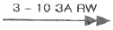
- 3월 10일 오전 3시 비오고 습윤 상태 도로에서의 추돌사고
- 3월 10일 오전 3시 맑고 건조한 상태 도로에서의 추돌사고
- 3월 10일 오전 3시 비오고 습윤 상태 도로에서의 측면추돌사고
- 3월 10일 오전 3시 비오고 빙판 상태 도로에서의 측면추돌사고
(정답률: 76%)
112. 교통사고 현장에 나타난 스키드 마크(skid mark)의 길이가 12m일 때, 사고차량의 제동직전 주행속도는? (단, 사고현장은 평지이고 타이어와 노면의 마찰계수는 0.8이다.)
- 약 44km/h
- 약 49km/h
- 약 54km/h
- 약 59km/h
(정답률: 64%)
113. 연평균 5건의 교통사고가 발생하는 한 교차로에 1년 동안 3건 이상의 교통사고가 발생할 확률은? (단, 일정기간 동안의 교통사고가 발생할 확률은 포아송분포를 따르는 것으로 가정한다.)
- 약 65.5%
- 약 76.5%
- 약 87.5%
- 약 98.5%
(정답률: 53%)
114. 교통사고 분석에서 사용하는 용어에 대한 설명으로 옳지 않은 것은?
- 사고 100건당 사망자 수를 치사율 이라고 한다.
- 전체 사상자(사망자+부상자)에서 사망자가 차지하는 비율을 사망률 이라고 한다.
- 교통사고로 인하여 30일 이내에 사망한 경우 사망하고에 해당한다.
- 교통사로로 인하여 2주 이상의 치료를 요하는 부상을 입은 경우 중상사고에 해당한다.
(정답률: 58%)
115. 보행자의 안전한 도로 횡단을 위한 시설인 횡단보도의 설치 원칙이 아닌 것은?
- 운전자가 식별하기 쉬운 위치에 설치한다.
- 횡단거리를 최소화할 수 있는 위치에 선정한다.
- 횡단보도는 항상 차로와 직각으로 설치하여야 한다.
- 폭은 보행자 교통량, 신호시간 등을 고려하되 최소치를 4.0m 로 한다.
(정답률: 60%)
116. 정지하고 있던 차량이 3m/sec2으로 가속하여 72km/h에 도달하기까지 소요되는 시간은?
- 약 5.8초
- 약 6.7초
- 약 7.6초
- 약 8.5초
(정답률: 64%)
117. 교통사고예발 또는 피해를 경감시키기 위한 각종대책을 3E라고 구분하여 분류하는데 다음 중 이와 관련이 없는 것은?
- 시설(Engineering)
- 규제(Enforcement)
- 교육(Education)
- 환경(Environment)
(정답률: 66%)
118. 운전자의 정보처리과정을 바르게 연결한 것은?
- 발견-의사결정-반응-인식
- 인식-발견-의사결정-반응
- 인식-발견-반응-의사결정
- 발견-인식-의사결정-반응
(정답률: 63%)
119. 안전성 측면에서 일방통행도로의 특징에 대한 설명으로 옳지 않은 것은?
- 정면충돌사고는 방지하기 어려우나 측면충돌과 같은 대형사고를 방지할 수 있다.
- 교차로에서의 상충지점수가 적다.
- 회전차량을 추월할 수 있으므로 추돌사고의 가능성이 줄어든다.
- 신호시간을 연속 진행에 맞출 수 있으므로 정지수를 줄이고 차량군을 형성하여 교차로를 통과함으로써 횡단보행자나 횡단교통을 위한 시간간격을 마련할 수 있다.
(정답률: 66%)
120. 요 마크(yaw mark)를 이용한 차량의 제동시 속도 추정공식에서 이용하는 요소가 아닌 것은?
- 경사
- 타이어와 노면의 마찰계수
- 사고차량의 중량
- 요 마크의 곡선 반경
(정답률: 59%)